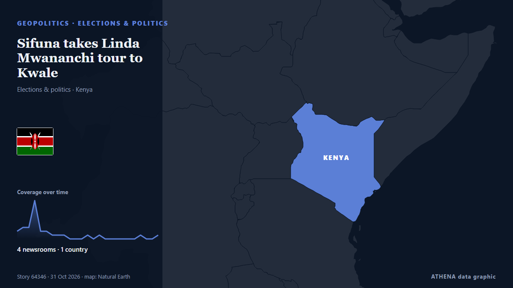

Sifuna takes Linda Mwananchi tour to Kwale

NAIROBI, Kenya Oct 31 – Edwin Sifuna’s Linda Mwananchi movement is taking its political message to the Coast a day after the party unveiled its new identity and secretariat. من Capital FM Kenya
نشرته بشكل مستقل 4 مصادر في دولة واحدة منذ 30 أكتوبر، وأول من نشره People Daily؛ والتغطية تتراجع. يقدّر ATHENA الخطر بأنه معتدل (2.8/10)، ويعود ذلك أساسًا إلى خطورة الضرر الموصوف والتداعيات المتسلسلة المحتملة. الثقة 59٪ (متوسطة)، وعدد المصادر المستقلة المؤكِّدة: 4، بمتوسط موثوقية للمصادر يبلغ 73٪. وسائل الإعلام حسب البلد: كينيا (29). التغطية: من 30 أكتوبر إلى 31 أكتوبر، 31 ساعة.
لماذا يهم: قد تغيّر التطورات الأمنية والدبلوماسية التحالفات والتجارة والأسواق إلى ما هو أبعد بكثير من الدول المعنية مباشرة.
ما الذي تغيّر: 8 تقارير جديدة من 3 غرف أخبار خلال 24 ساعة حتى 31 أكتوبر.
العنوان الأول: Why Sifuna must seize Linda Mwananchi momentum after Nairobi party launch
تُعرض العناوين بالإنجليزية كما نُشرت.
نظرة سريعة
اختير وقُيِّم وكُتب وفق منهجية ATHENA المنشورة. لا يتدخل أي محرر في الأحداث بعينها. كيف يُنتَج ›
| 30 Oct 06:27 UTC | 5 |
|---|---|
| 30 Oct 08:27 UTC | 12 |
| 30 Oct 10:27 UTC | 2 |
| 30 Oct 12:27 UTC | 2 |
| 30 Oct 14:27 UTC | 1 |
| 30 Oct 16:27 UTC | 0 |
| 30 Oct 18:27 UTC | 1 |
| 30 Oct 20:27 UTC | 1 |
| 30 Oct 22:27 UTC | 0 |
| 31 Oct 00:27 UTC | 0 |
| 31 Oct 02:27 UTC | 1 |
| 31 Oct 04:27 UTC | 0 |
| 31 Oct 06:27 UTC | 1 |
| 31 Oct 08:27 UTC | 2 |
| 31 Oct 10:27 UTC | 0 |
| 31 Oct 12:27 UTC | 1 |
| 30 Oct 07:34 UTC | 0.0 |
|---|---|
| 30 Oct 08:38 UTC | 4.4 |
| 30 Oct 08:48 UTC | 2.2 |
| 30 Oct 09:19 UTC | 2.8 |
| 30 Oct 09:51 UTC | 2.2 |
| 30 Oct 10:25 UTC | 3.4 |
| 30 Oct 19:37 UTC | 2.8 |
| 31 Oct 13:50 UTC | 2.8 |
لماذا هذه الأرقام
الأهمية
الخطر
الثقة
التغطية — من نشر الخبر ومتى
العنوان كما نُشر · يفتح الأصل- People Daily · كينياLinda Mwananchi Movement office launch: Sifuna’s biggest political test begins as 2027 race takes shape
- People Daily · كينياPauline Njoroge hails Sifuna for constitutionalism and invokes the Bible
- People Daily · كينياWhy Sifuna must seize Linda Mwananchi momentum after Nairobi party launch
- People Daily · كينياTim Wanyonyi officially joins Linda Mwananchi Movement
- Capital FM · كينياWinnie Odinga set to attend Sifuna’s Linda Mwananchi launch amid Nairobi Senate bid
- People Daily · كينياSifuna launches Linda Mwananchi headquarters in Nairobi
- People Daily · كينياList of opposition principals attending launch of Linda Mwananchi Movement headquarters
- People Daily · كينيا‘It has not been easy’ – Sifuna recounts struggles to establish Linda Mwananchi movement
- People Daily · كينياSifuna pledges to put citizens first, uphold constitutionalism
- People Daily · كينياSifuna unveils Linda Mwananchi Movement leadership structure as Natembeya, Osotsi get key posts
- People Daily · كينياSifuna pledges Ksh500B budget cuts if he forms govt
- People Daily · كينياKawira Mwangaza takes up leadership role in Linda Mwananchi movement
- People Daily · كينياWamalwa: I will support Sifuna if picked as opposition’s presidential candidate
- People Daily · كينياKalonzo booed after claiming Sifuna is not yet a presidential candidate
- People Daily · كينياSifuna forced to intervene as crowd boos Kalonzo at Linda Mwananchi headquarters launch
- People Daily · كينياCaroli Omondi: Linda Mwananchi no longer a movement, we have become a party
- Capital FM · كينياSifuna sets November 13 convention as Linda Mwananchi targets 47 counties
- People Daily · كينياNatembeya urges tolerance after crowd boos at Kalonzo at Linda Mwananchi Movement headquarters launch
- People Daily · كينياLinda Mwananchi launch: Karua calls for unity to solve Kenya’s leadership crisis
- People Daily · كينياMatiang’i ally Onyonka lands top position in Sifuna’s Linda Mwananchi
- People Daily · كينياWinnie Odinga and Orengo skip Sifuna’s Linda Mwananchi official party launch
- The Standard · كينياKalonzo jeered during Linda Mwananchi party launch
- People Daily · كينياInside Sifuna’s 2027 game plan to woo women and Gen Z through Linda Mwananchi
- The Standard · كينياOpposition leaders invoke 2002 unity as Sifuna launches Linda Mwananchi
- People Daily · كينياODM woos Kalonzo after booing at Linda Mwananchi event
- Capital FM Kenya · كينياSifuna takes Linda Mwananchi tour to Kwale
- Capital FM Kenya · كينياSifuna warns Linda Mwananchi leaders at Kwale rally
- People Daily · كينياLinda Mwananchi kicks off Kwale tour as Sifuna leads aspirants forum
- People Daily · كينياSifuna’s Linda Mwananchi opens offices in Kwale County